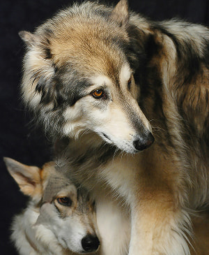
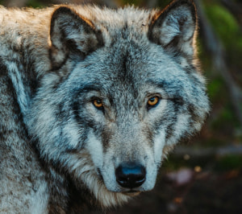
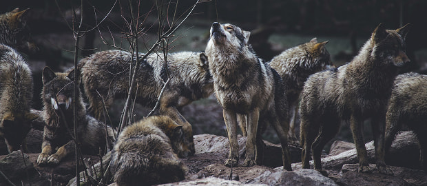

Lobo Cinza
da Familia Canis LupusO lobo (Canis lupus) é um mamífero carnívoro da família Canidae. É encontrado principalmente no Hemisfério Norte, habitando diferentes ambientes, como florestas, tundras e regiões montanhosas.

O lobo (Canis lupus) é um mamífero carnívoro da família Canidae. É encontrado principalmente no Hemisfério Norte, habitando diferentes ambientes, como florestas, tundras e regiões montanhosas.

O peso e tamanho dos lobos variam muito em todo o mundo, tendendo a aumentar proporcionalmente com a latitude, como previsto pela teoria de Christian Bergmann. Em geral, a altura, medida a partir dos ombros, varia de 60 a 90 centímetros.
O peso varia geograficamente. Em média, os lobos europeus pesam cerca de 38,5 kg; os lobos da América do Norte, 36 kg; os lobos indianos e árabes, 25 kg. Embora raros, lobos com mais de 77 kg já foram encontrados em algumas regiões.
Prefiro andar pelos vales sombrios junto aos lobos, do que em campos floridos ao lado de falsos cordeiros
- Surgiu: 12.000 anos
- Tipo: Mamifero
- Idade Média: 13 anos
- Surgiu: 12.000 anos
- Macho adulto:80kgs
- Femea adulta:55kgs
- Família: Lupus
É um sobrevivente da Era do Gelo, originário do Pleistoceno Superior, cerca de 300 mil anos atrás. O sequenciamento de DNA e estudos genéticos confirmam que o lobo-cinzento é um ancestral do cão doméstico.
É um sobrevivente da Era do Gelo, originário do Pleistoceno Superior, cerca de 300 mil anos atrás. O sequenciamento de DNA e estudos genéticos confirmam que o lobo-cinzento é um ancestral do cão doméstico.
